更新日 : 2019/12/01
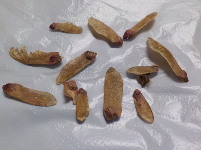
まだ木にぶら下がっていたので収穫しました。
羽でクルクル回りながら落ちる姿を初めて見ました。
更新日 : 2020/03/19
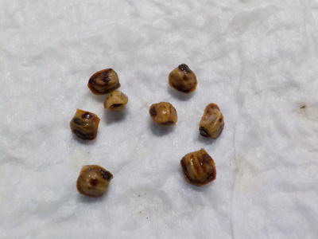
12月採取の種なので、たぶん一度乾燥しています。
なので、発芽が遅いんでしょう。たぶん。
種子は乾燥すると発芽が遅くなるって言いますが、それって本当かな？野菜や花の種ってしっかり乾燥してるけどちゃんと発芽しますよね。
ちゃんとしたデータってあるのかな？
更新日 : 2020/05/01
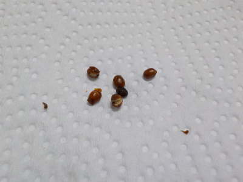
種子に変化がないので種の殻を割りました。
種が小さいので難しく、何個かダメにしてしまいました。
今年種を採るとしたら、失敗する分も考慮して採取しようと思います。
更新日 : 2020/05/16
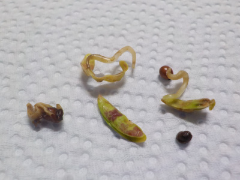
発芽して膨張しているんですが、くねくねと弱々しく伸びています。
手で持ったら、葉っぱや根っこが折れて取れてしまいました。
取り扱いが面倒です。
2020/05/17
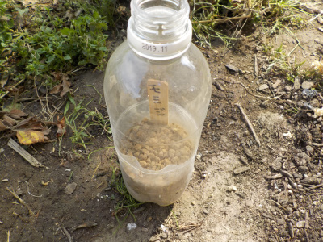
発芽したモミジの取り扱いが面倒なのでペットボトルに植えました。
これでしばらく水やりが楽ちんです。
更新日 : 2021/03/21
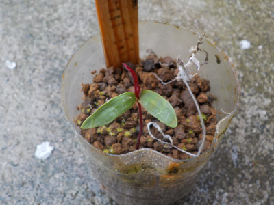
去年発芽したモミジと種をペットボトルに入れて育てていたんですが、発芽したものは枯れてしまいました。
残っっていた種が今年発芽したようです。
去年は水耕栽培を色々して遊んだんですが、発芽後の成長が良くないものが多かったです。
種は土にまいた方がいいと思いました。
更新日 : 2021/04/04
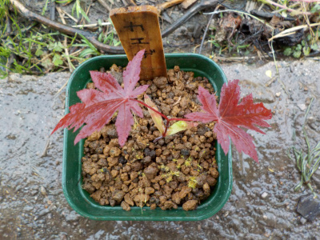
葉っぱが広がってペットボトルが窮屈になったので植替えしました。
細い枝に大きな葉っぱが付いているのでとっても弱々しい感じです。
風に負けそうです。
更新日 : 2021/06/20
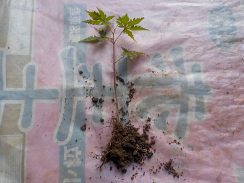
種が落ちて勝手に生えてたモミジです。
家の紅葉はいつでも赤い葉っぱの紅葉なので、交配したとか突然変異とか先祖返りかなにかかな？
家に緑の紅葉はないので、鉢に植えて育てようと思います。
夏は緑の葉っぱのモミジの方がいいですよね。
更新日 : 2021/09/26
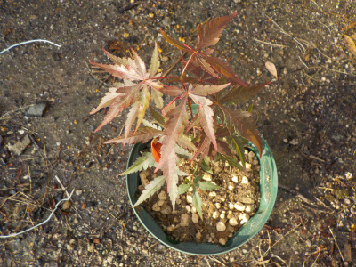
大きくなったので鉢のサイズを大きくしました。
今年の紅葉はどうなるかな？
更新日 : 2022/06/27
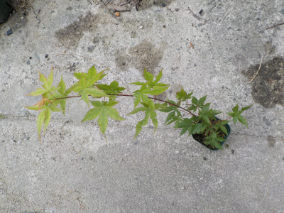
暖かくなってからモミジが急成長しました。
3月はとっても小さかったのに。
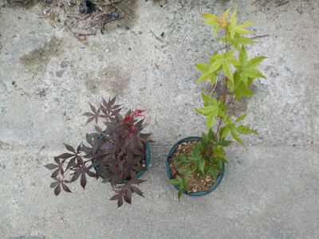
鉢が小さすぎて不安定なので、大きくしました。
赤いのは去年植替えしたモミジです。高さはそれよりだいぶ大きくなりました。
更新日 : 2026/04/29
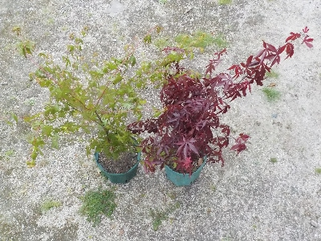
葉っぱがだくさん出てごちゃごちゃしてますね。
風に吹かれてユラユラ揺れる木を作りたいですが、この大きさじゃあまだ無理かな？
モミジは季節感があっていいですよね。
【おいしいものを食べよう。】【たくさん寝よう。】
【ソロ活をしよう!】【季節感のあることをしよう。】【動画視聴はほどほどに。】【当サイトの全てのコンテンツは無断転載禁止です。】